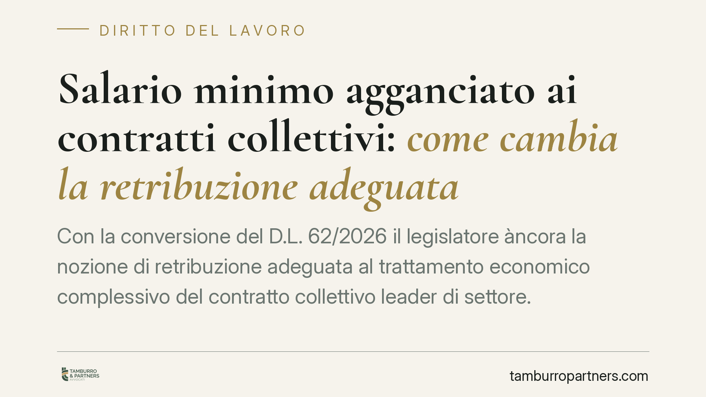

Salario minimo agganciato ai contratti collettivi: come cambia la retribuzione adeguata
Con la conversione del D.L. 62/2026 il legislatore àncora la nozione di retribuzione adeguata al trattamento economico complessivo del contratto collettivo leader di settore. Un meccanismo finora affidato ai giudici diventa regola di legge. Vediamo in cosa consiste, quali fonti lo sorreggono e cosa cambia concretamente per datori di lavoro, lavoratori, sindacati e contenzioso.

Il fatto
Il D.L. 62/2026 è stato convertito in legge. Gli estremi esatti del provvedimento e la data di pubblicazione in Gazzetta Ufficiale sono in corso di verifica: trattandosi del fulcro della materia, chi intende fare affidamento sulle norme di seguito illustrate deve riscontrarne il testo definitivo sulla fonte ufficiale.
Il nucleo della riforma è questo: la retribuzione «proporzionata e sufficiente» prevista dall'art. 36 della Costituzione viene agganciata, per via legislativa, al trattamento economico complessivo del contratto collettivo nazionale comparativamente più rappresentativo del settore – il cosiddetto contratto leader.
Inquadramento normativo
L'art. 36 Cost. riconosce al lavoratore il diritto a una retribuzione proporzionata alla quantità e qualità del lavoro e comunque sufficiente ad assicurare un'esistenza libera e dignitosa. È una norma precettiva, direttamente applicabile dal giudice.
Fino ad oggi, in assenza di un salario minimo legale, il parametro di adeguatezza è stato individuato dalla giurisprudenza nei minimi del contratto collettivo di settore. L'orientamento consolidato della Corte di Cassazione del 2023 ha precisato che il giudice, nel valutare l'adeguatezza della retribuzione, può discostarsi dai minimi contrattuali quando questi risultino a loro volta non conformi all'art. 36 Cost., utilizzando anche parametri esterni. Per i riferimenti puntuali delle singole pronunce si rinvia alla consultazione diretta delle massime.
Sullo sfondo si colloca la Direttiva (UE) 2022/2041 del 19 ottobre 2022, relativa a salari minimi adeguati nell'Unione europea, che promuove la contrattazione collettiva come strumento privilegiato di fissazione dei minimi. La novità italiana si muove in questa direzione: non un salario minimo orario uniforme, ma il rinvio alla contrattazione comparativamente più rappresentativa.
Il nodo tecnico: trattamento complessivo o minimo tabellare?
Il punto più delicato è l'oggetto del rinvio. La norma àncora l'adeguatezza al trattamento economico complessivo del contratto leader, non al solo minimo tabellare.
La differenza non è di dettaglio. Il minimo tabellare è la paga base di livello; il trattamento complessivo include voci ulteriori a carattere retributivo previste dal contratto (ad esempio indennità e scatti, nei limiti definiti dal CCNL applicabile). Agganciare l'adeguatezza al dato complessivo alza l'asticella del parametro di legittimità e amplia il margine di eventuali differenze retributive rivendicabili.
Implicazioni pratiche
Per i datori di lavoro. Chi applica un contratto collettivo meno favorevole di quello leader del proprio settore – o un contratto cosiddetto «pirata» – è esposto a un rischio di contenzioso più strutturato, perché il parametro di confronto diventa normativamente definito.
Per i lavoratori. Si rafforza la posizione di chi percepisce una retribuzione inferiore al trattamento del contratto leader: il raffronto non dipende più soltanto dalla valutazione discrezionale del giudice sul caso singolo.
Per i sindacati. Cresce il peso della rappresentatività comparata: l'individuazione del contratto leader diventa snodo decisivo e potenziale terreno di confronto tra sigle.
Per i giudici del lavoro. La codificazione del criterio riduce l'incertezza interpretativa, ma apre questioni nuove sull'identificazione in concreto del contratto comparativamente più rappresentativo e sul perimetro del trattamento complessivo.
Il tema della prescrizione
I crediti retributivi si prescrivono nel termine quinquennale previsto dall'art. 2948 c.c. Secondo l'orientamento giurisprudenziale, nei rapporti non assistiti da stabilità reale il termine decorre dalla cessazione del rapporto. È un profilo rilevante per chi intenda far valere differenze retributive: il tempo incide sulla porzione di credito recuperabile. La questione va valutata caso per caso.
Cosa fare in concreto
- Verificare il contratto applicato: individuare il CCNL in uso e confrontarlo con il contratto comparativamente più rappresentativo del settore.
- Effettuare un audit delle buste paga: ricostruire il trattamento economico complessivo erogato e confrontarlo con quello del contratto leader.
- Raccogliere e conservare la documentazione: contratto individuale, buste paga, prospetti delle presenze, comunicazioni aziendali.
- Monitorare la prescrizione: valutare i termini quinquennali per non pregiudicare crediti recuperabili.
- Attendere le fonti applicative: è opportuno attendere la pubblicazione ufficiale del testo convertito e le prime indicazioni interpretative prima di assumere decisioni definitive.
Disclaimer
Contributo informativo a cura di Tamburro & Partners - Avv. Giuseppe Tamburro. Non costituisce parere legale.
Ogni storia di lavoro ha i suoi tempi.
Se gestisci HR e vuoi un confronto su contenzioso, ispezioni o licenziamenti, scrivi allo studio. Ti rispondiamo entro un giorno lavorativo.